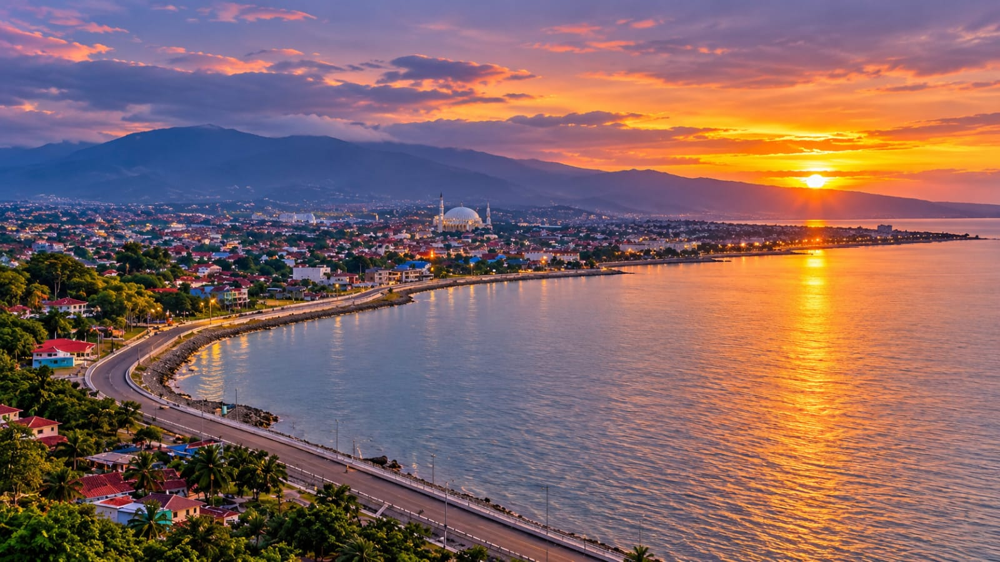
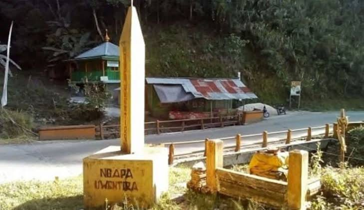

The Beauty of Palu
The Beauty of Palu

Sejarah Kota Palu dan Suku Kaili dalam sejarah La Galigo tercatat satu riwayat Sawerigading, yang pernah menginjakan kakinya di tanah Kaili, peristiwa ini terjadi sekitar abad 8-9 M. Cerita tentang Sawerigading sangat populer di masyarakat Bugis dan juga masyarakat Kaili. Peristiwa ini juga merupakan cikal bakal terjalinnya hubungan dagang antara Kerajaan-Kerajaan di Tanah Kaili khususnya Kerajaan Banawa dan Kerajaan Sigi. Teluk Kaili dahulu sangat luas yang tepi pantai sebelah barat berada di Desa Bangga, di belah timur sampai ke Desa Bora dan mengintari Desa Loru. Bisa di bayangkan seperti apa lembah Palu pada saat itu. proses surutnya laut teluk Kaili diperkirakan terjadi sebelum Abad 16, sebab pada Abad 16 sudah ada Kerajaan Palu.
Dari kawasan permukiman masyarakat Kaili hingga menjadi ibu kota Provinsi Sulawesi Tengah, Palu terus berkembang melalui perjalanan panjang dalam bidang pemerintahan, ekonomi, dan pembangunan.
Palu menyimpan kisah perubahan dan perjuangan masyarakatnya. Setiap masa meninggalkan jejak yang membentuk Palu menjadi kota yang dikenal hingga saat ini.
Pada Abad 16 dalam Aksara Lontara telah di sebutkan satu Kerajaan di tanah Kaili yang bernama Kerajaan Palu. punhalnya para intelektual belada pada Abad 18 telah menggunakan kata Palu untuk menunjuk daerah lembah Kaili. Patut ditelusuri kapan tepatnya penggunaan kata Palu untuk Kota Palu sebab hal ini dapat mengungkap tabir peradaban masyarakat Kaili. Sayangnya, masyarakat Kaili tidak menganut budaya tulis, melainkan budaya lisan. Hal ini disebabkan karena orang Kaili mempunyai satu filosofi bahwa tubuh adalah dunia yang kecil, dan apun yang terjadi di dunia merupakan kejadian dalam diri. Dengan kata lain tubuh adalah rangkaian catatan-catatan yang terus mengalir dari waktu ke waktu.

Asal-usul Wentira (atau Ngata Uwentira) di Sulawesi Tengah bermula dari legenda lokal masyarakat suku Kaili yang menyebutnya sebagai kota atau negeri tak kasat mata.
Lokasi Geografis: Secara fisik, wilayah yang dikaitkan dengan Wentira berada di kawasan hutan belantara dan perkebunan kopi di jalur Trans-Sulawesi, tepatnya di antara Kota Palu dan Kabupaten Parigi Moutong.
Penanda Fisik: Daerah ini ditandai dengan sebuah jembatan kecil dan Tugu Kuning. Masyarakat sekitar maupun pengendara yang melintas biasanya membunyikan klakson tiga kali sebagai bentuk "permisi" saat melewati jalur tersebut.
Kisah Mistis dan Kerajaan Gaib: Dalam cerita rakyat, Wentira dipercaya sebagai salah satu kerajaan jin terbesar di Asia Tenggara atau Nusantara. Konon, wilayah ini dipimpin oleh seorang raja dengan tujuh panglima dan jutaan tentara.
Pantangan: Pantangan yang paling terkenal bagi siapa saja yang mempercayai atau melintas di daerah ini adalah larangan menggunakan pakaian berwarna kuning, karena warna tersebut identik dengan kebesaran atau warna khas dari penghuni Wentira.
Gambarkan Kota Modern: Mitos yang beredar luas menggambarkan Wentira bukan sekadar hutan, melainkan sebuah kota metropolitan yang sangat maju, futuristik, dengan bangunan-bangunan megah berlapis emas murni, bahkan diyakini memiliki transportasi seperti monorel kaca.